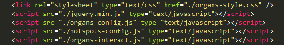
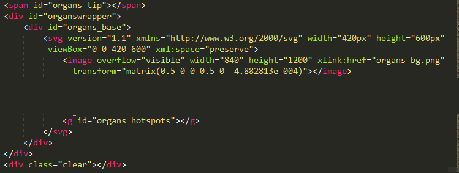
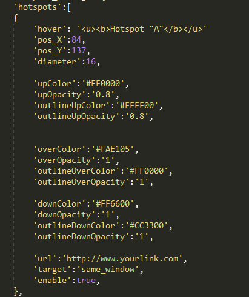

“Interactive Human Body Organs Diagram” Documentation by “Art101”
“Interactive Human Body Organs Diagram”
Released on: August 2015
Our rating: 


Please don't forget to rate the work
Thank you for purchasing my work. If you have any questions that are beyond the scope of this help file, please feel free to email me directly through the contact form here. Thanks so much!
Table of Contents
- General overview
- Installation
- How to integrate the diagram into WordPress site?
- Organs Customization
- How to add/remove and modify hotspots?
- How to get X, Y coordinates?
- How to resize the diagram?
- Tips and tricks
- Other works
General overview - top
This is an interactive human body organs diagram coded in HTML5 based on Scalable Vector Graphics (SVG) utilizing a high quality image as a background. So it can be scaled to any size up to 840px X 1200px without losing its quality. Also it can be customized through easy to use 2 Javascript files; "organs-config.js" to customize the general organ colors, links, and hover description. And "hotspots-config.js" allows you to put customizable clickable spot anywhere on the diagram using XY coordinate.
Installation - top
To insert the diagram to your website, please follow these steps:
- Open the "organs.html" file using any text editor such as Sublime Text, Adobe Dreamweaver, or Notepad.
- Copy the code from the head tag and paste it before the closing head tag of your page
 - Upload the "organs-bg.png" image and the CSS file and the 3 JS files plus the jquery file to your site. If you want to put them in another directory, please make sure that the relative path is correct or use their absolute path like this
<script src="http://www.yoursite.com/diagram/organs-config.js" type="text/javascript"></script> - Copy the code from the body tag and paste it anywhere you want to insert the diagram in your page
 - Save and test it.
If you have any questions about these steps, please don't hesitate to contact us.
Note: We offer installation and customization service for little extra charge, just drop us a line and we will get back to you.
How to integrate the diagram into WordPress site - top
|
If you have any questions about these steps, please don't hesitate to contact us.
Note: We offer installation and customization service for little extra charge, just drop us a line and we will get back to you.
Organs Customization? - top
You can customize the colors, links, hover description for each organ independently through the included "organs-config.js" like this:
|
How to add/remove and modify hotspots? - top
Using the included "hotspots-config.js" file, for your convenience you can just copy/paste the code of any of the existing spots and change its parameters, You can use this guide to get the X, Y coordinates.
|
 |
How to get X, Y coordinates? - top
Click any where on this diagram to get the X, Y values:
How to resize the diagram - top
The diagram already has a default size for different screen sizes but if you put it in a small div according to your website design, you may notice an empty area above and below the diagram, to remove this gap simply adjust the height values of the #organs_base svg in the included organs-style.css file.
Note: A fixed height value is required for IE to load SVG shape in the required size otherwise it will be shrinked to a minimum size, so you can adjust the height value but don't delete it.
Tips and tricks - top
- You can use any background color, you can set it at the organs-style.css file line no.5
- You can make some or all the organs disabled in the organs-config.js file to make a good use of the hotspot option.
- You have unlimited possibilities for playing around the diagram color and opacity. Use it!
- When you use the X, Y coordinate guide, after clicking the diagram, just double click on the output number and copy it then paste it in the javascript file.
- To get a color code, you can use this color picker.
- IMPORTANT: For better interactive animation, the hover popup is floating so in some templates, it could be pushed away for where it should be, to adjust it, move the span "organs-tip" line of code to either just after the body tag of YOUR PAGE or in the Footer section, like this:
<body>
<span id="organs-tip"<span>
if you need any help please email us directly and I will be glad to assist you.
See also: top


That's it :)
Once again, thank you so much for purchasing my work. As I said at the beginning, I'd be glad to help you if you have any questions relating to this file. No guarantees, but I'll do my best to assist. If you need a special customization, please don't hesitate to contact me anytime directly via my profile page on CodeCanyon.
Thank you